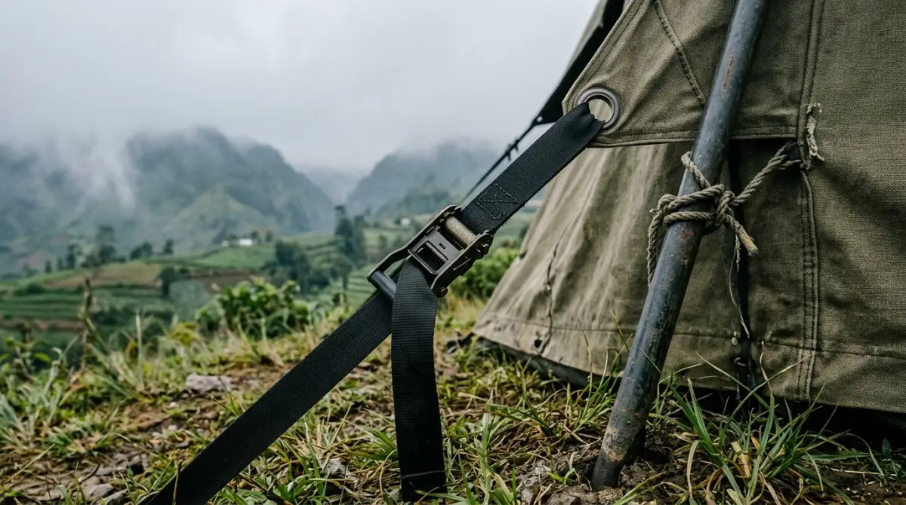

Tenda semi permanen — solusi kemah keluarga paling nyaman di kawasan sejuk Batu, Jawa Timur.
Tenda semi permanen — solusi kemah keluarga paling nyaman di kawasan sejuk Batu, Jawa Timur.
Pernahkah kamu merasa akhir pekan berlalu begitu saja tanpa kenangan berarti bersama keluarga? Sibuk mengejar target pekerjaan dan tenggelam dalam rutinitas kantor sering kali membuat kita lupa bahwa waktu berjalan sangat cepat. Anak-anak tumbuh besar dalam sekejap, dan momen kebersamaan yang berkualitas tidak akan terulang dua kali.
Menunda liburan karena khawatir repot membawa anak kecil ke alam bebas hanya akan menyisakan penyesalan di kemudian hari. Jangan sampai kamu hanya bisa menatap layar smartphone, melihat rekan kerja membagikan momen seru liburan mereka, dan membatin "coba saja kita berangkat kemarin". Membawa keluarga menikmati udara sejuk pegunungan tidak lagi sesulit menyusun laporan tahunan.
Dengan hadirnya inovasi tenda semi permanen, impian mengajak keluarga berkemah di kawasan Batu kini bisa diwujudkan dengan sangat mudah, aman, dan tanpa mengorbankan kenyamanan sedikit pun. Mari kita bahas mengapa opsi ini adalah solusi liburan terbaikmu.
Mengapa Tenda Lipat Biasa Sering Membuat Frustrasi?
Mari kita bicara realita. Banyak orang memiliki ekspektasi tinggi saat merencanakan kemah keluarga. Bayangannya adalah duduk santai menikmati kopi sambil melihat anak-anak berlarian di atas rumput hijau. Namun, jika kamu memutuskan untuk menggunakan tenda lipat biasa—terutama jika kamu bukan pencinta alam kelas berat—realitanya sering kali jauh dari ekspektasi.
Membangun tenda lipat standar di tengah hembusan angin pegunungan itu rasanya seperti disuruh mengerjakan revisi presentasi seratus slide, sendirian, sepuluh menit sebelum pitching ke klien penting. Panik, memancing emosi, dan sangat rentan berantakan.
Belum lagi urusan mencari lahan datar, memasang pasak agar tenda tidak terbang, hingga merakit rangka besi yang memakan waktu berjam-jam. Waktu yang seharusnya dipakai untuk bersantai dan membangun bonding dengan keluarga justru habis terkuras untuk urusan logistik yang menguras keringat.
Selain itu, cuaca di kawasan dataran tinggi seperti Batu dan Malang memiliki karakteristik yang dinamis. Suhu bisa anjlok hingga belasan derajat Celsius di malam hari, disertai hembusan angin yang cukup kencang. Tenda dome biasa dengan bahan tipis sering kali tidak mampu menahan hawa dingin ini secara optimal.
Bayangkan jika anak balitamu rewel sepanjang malam karena kedinginan atau ketakutan mendengar suara kain tenda yang mengepak keras diterpa angin. Bukannya pulang dengan tubuh segar, keesokan harinya kamu justru harus masuk kantor dengan mata panda dan keluhan masuk angin.
Keunggulan Utama Tenda Semi Permanen untuk Keluarga
Di sinilah tenda semi permanen masuk sebagai penyelamat liburanmu. Berbeda dengan tenda kemping konvensional yang harus dibongkar pasang, tenda jenis ini biasanya sudah didirikan oleh pengelola lokasi wisata (mirip dengan konsep glamping atau glamorous camping).
Fasilitas ini dirancang khusus untuk menjembatani keinginan menikmati alam liar dengan kebutuhan akan kenyamanan paripurna. Berikut adalah beberapa alasan teknis dan psikologis mengapa jenis tenda ini sangat superior:
1. Struktur Kokoh Tahan Cuaca Ekstrem
Kenyamanan bermula dari rasa aman. Tenda semi permanen dibangun dengan fondasi yang jauh lebih serius. Analoginya, jika tenda biasa adalah pekerja freelance yang bisa berpindah-pindah kapan saja, tenda semi permanen adalah karyawan tetap dengan posisi manajerial yang punya pondasi kuat di perusahaan.
Rangkanya biasanya menggunakan pipa besi tebal, baja ringan, atau kayu solid yang tertanam kuat ke tanah atau lantai kayu (decking). Material penutupnya pun bukan sekadar nilon parasut tipis, melainkan kain kanvas kualitas premium atau PVC tebal yang kedap air (waterproof) dan kedap angin (windproof).
Dengan struktur sekuat ini, kamu dan keluarga bisa tidur nyenyak tanpa perlu khawatir tenda akan bocor saat hujan deras atau terbang terbawa angin badai pegunungan. Rasa aman ini sangat krusial, terutama bagi para ibu yang membawa anak kecil.
2. Ruang Interior Luas Tanpa Perlu Merangkak
Salah satu keluhan terbesar saat berkemah adalah keterbatasan ruang gerak. Mengganti baju di dalam tenda kecil sering kali membutuhkan manuver akrobatik yang menyiksa punggung. Tenda semi permanen menghilangkan penderitaan ini sepenuhnya.
Desainnya yang meninggi (sering kali berbentuk bell tent atau safari tent) memberikan keleluasaan ruang vertikal yang sangat lega. Kamu bisa berdiri tegak, berjalan mondar-mandir, dan meletakkan barang bawaan tanpa merasa sumpek.
Ruang yang luas ini juga memberikan sirkulasi udara yang jauh lebih baik, sehingga interior tenda tidak terasa pengap meskipun diisi oleh empat hingga lima anggota keluarga. Rasanya seperti memindahkan kamar tidur utama di rumahmu langsung ke tengah hutan pinus.
3. Kasur Empuk dan Tidur Berkualitas
Lupakan matras tipis atau sleeping bag yang membuat badan pegal linu keesokan harinya. Keistimewaan terbesar dari menginap di tenda semi permanen adalah fasilitas tempat tidurnya. Sebagian besar penyedia layanan kemah di Batu melengkapi tenda jenis ini dengan kasur spring bed sungguhan atau kasur busa tebal berspesifikasi hotel.
Ditambah dengan seprai katun yang bersih, bantal empuk, dan selimut atau bed cover yang tebal, kualitas tidurmu akan terjamin 100 persen. Hal ini menjadikan tenda jenis ini sangat bersahabat tidak hanya untuk balita, tetapi juga untuk anggota keluarga yang lebih tua (lansia) seperti kakek dan nenek yang mungkin ingin ikut merasakan syahdunya liburan alam tanpa harus mengorbankan kesehatan tulang punggung mereka.

Interior tenda semi permanen yang luas dan nyaman — kasur empuk, selimut tebal, dan ruang gerak layaknya kamar hotel.Momen Magis di Batu Tanpa Beban Logistik
Ketika urusan tempat tinggal, keamanan, dan kehangatan sudah terselesaikan oleh fasilitas tenda semi permanen, kamu memiliki kemewahan waktu yang luar biasa. Pikiranmu menjadi jernih, dan kamu bisa fokus menciptakan momen-momen magis yang menjadi tujuan utama liburan ke Batu.
Sesi BBQ Hangat di Malam Hari
Malam hari di dataran tinggi Batu adalah kanvas yang sempurna untuk kebersamaan. Karena tenda sudah siap sedia, kamu bisa langsung menyiapkan agenda malam, yaitu pesta Barbeque (BBQ). Mengelilingi alat panggang di depan tenda sambil mencium aroma daging dan sosis yang terbakar adalah sebuah terapi penghilang stres yang luar biasa.
Dalam dunia kerja, kita sering memakai topeng profesionalisme. Namun, saat duduk bersama di alam terbuka, ditemani udara dingin dan makanan hangat, pertahanan diri itu luruh. Anak-anak yang biasanya sibuk dengan gadget akan lebih tertarik melihat api menyala, sementara kamu dan pasangan bisa kembali mengobrol dari hati ke hati, tertawa lepas menertawakan hal-hal kecil yang selama ini tertutup oleh tenggat waktu pekerjaan.
Menyambut Sunrise Tanpa Kurang Tidur
Kawasan lereng pegunungan di Batu dan Malang terkenal dengan panorama matahari terbitnya yang juara. Namun, untuk menikmati sunrise, kamu butuh energi dan mood yang baik.
Karena semalaman kamu tidur nyenyak dan hangat di dalam tenda semi permanen, bangun di pukul 04:30 pagi tidak akan terasa seperti siksaan. Tubuhmu sudah recharge penuh. Kamu cukup menyeduh minuman hangat, keluar menuju teras tenda, dan menyaksikan langsung bagaimana langit perlahan berubah warna dari biru pekat menjadi perpaduan jingga keemasan yang memukau. Menyaksikan kabut turun perlahan menutupi lembah dengan secangkir kopi di tangan adalah privilese yang sepadan dengan setiap rupiah yang kamu keluarkan untuk liburan ini.
Penutup
Pada akhirnya, tumpukan dokumen di atas meja kerjamu akan selalu bisa digantikan oleh tugas baru keesokan harinya. Target perusahaan akan terus diperbarui setiap kuartal, dan email dari klien tidak akan pernah berhenti berdatangan. Namun, masa kanak-kanak buah hatimu, tawa riang mereka saat berlarian di atas rumput berembun, serta energi remajamu untuk menjelajah alam bersama pasangan, memiliki batas waktu yang tidak bisa diperpanjang atau dinegosiasikan.
Jangan biarkan rencana liburan hanya berujung menjadi wacana usang yang terus tertunda oleh alasan kesibukan. Memilih menginap di tenda semi permanen di Batu bukan sekadar soal gaya-gayaan atau ikut tren semata, melainkan sebuah cara paling cerdas untuk menghargai sisa tenaga dan waktu istirahatmu. Kamu dengan sengaja mengeliminasi semua potensi kerepotan logistik agar bisa hadir sepenuhnya, seratus persen, untuk orang-orang tersayang. Ambil jeda sejenak dari hiruk-pikuk dan polusi kota. Jadwalkan liburan keluargamu akhir pekan ini, dan biarkan kehangatan alam pegunungan menciptakan cerita indah yang akan selalu mereka ingat hingga dewasa nanti.
FAQ — Tenda Semi Permanen